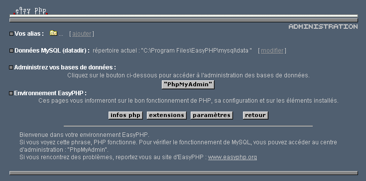
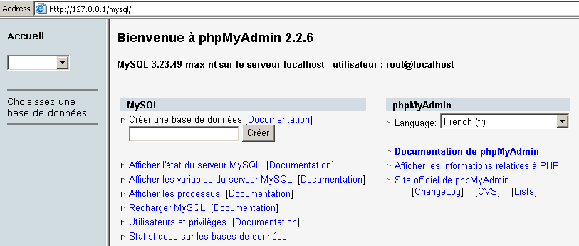
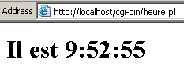

8. Appendices
8.1. Web Development Tools
Here we explain where to find and how to install the tools needed for web development. Some tools have been updated, and the instructions provided here may no longer apply to the latest versions. In that case, the reader will need to adapt accordingly... In the web programming course, we will primarily use the following tools, all of which are available for free:
- a recent browser capable of displaying XML. The course examples have been tested with Internet Explorer 6.
- a recent JDK (Java Development Kit). The examples in this course have been tested with JDK 1.4. This JDK includes the Java 1.4 Plug-in for browsers, which allows them to display Java applets using the Java 1.4 platform.
- a Java development environment for writing Java servlets. Here, it is JBuilder 7.
- Web servers: Apache, PWS (Personal Web Server), Tomcat.
- Apache will be used for developing web applications in PERL (Practical Extracting and Reporting Language) or PHP (Personal Home Page)
- PWS will be used for web application development in ASP (Active Server Pages) or PHP
- Tomcat will be used for web application development using Java servlets or JSP (Java Server Pages)
- a database management application: MySQL
- EasyPHP: a tool that brings together the Apache web server, the PHP language, and SGBD MySQL
8.1.1. Web Servers, Browsers, Scripting Languages
- Major Web Servers
- Apache (Linux, Windows)
- Internet Information Server IIS (NT), Personal Web Server PWS (Windows 9x)
- Major Browsers
- Internet Explorer (Windows)
- Netscape (Linux, Windows)
- Server-side scripting languages
- VBScript (IIS, PWS)
- JavaScript (IIS, PWS)
- Perl (Apache, IIS, PWS)
- PHP (Apache, IIS, PWS)
- Java (Apache, Tomcat)
- Languages .NET
- Browser-side scripting languages
- VBScript (IE)
- Javascript (IE, Netscape)
- PerlScript (IE)
- Java (IE, Netscape)
8.1.2. Where to find the tools
http://www.netscape.com/ (downloads link) | |
http://www.microsoft.com/windows/ie/default.asp | |
http://www.php.net http://www.php.net/downloads.php (Windows Binaries) | |
http://www.activestate.com http://www.activestate.com/Products/ http://www.activestate.com/Products/ActivePerl/ | |
http://msdn.microsoft.com/scripting (follow the Windows Script link) | |
http://java.sun.com/ http://java.sun.com/downloads.html (JSE) http://java.sun.com/j2se/1.4/download.html | |
http://www.apache.org/ http://www.apache.org/dist/httpd/binaries/win32/ | |
included in NT 4.0 Option pack for Windows 95 included in Windows 98's CD http://www.microsoft.com/ntserver/nts/downloads/recommended/NT4OptPk/win95.asp | |
http://www.microsoft.com | |
http://jakarta.apache.org/tomcat/ | |
http://www.borland.com/jbuilder/ http://www.borland.com/products/downloads/download_jbuilder.html | |
http://www.easyphp.org/ http://www.easyphp.org/telechargements.php3 |
8.1.3. EasyPHP
This application is very convenient because it combines the following in a single package:
- the Apache Web server (1.3.x)
- the PHP language (4.x)
- the SGBD MySQL (3.23.x)
- a MySQL administration tool: PhpMyAdmin
The installation application looks like this:

Installing EasyPHP is straightforward, and a directory structure is created in the file system:

the application executable | |
the Apache server directory structure | |
the SGBD directory structure mysql | |
the directory structure of the phpmyadmin application | |
the directory structure of php | |
root of the directory tree for web pages served by the Apache server for EasyPHP | |
directory where CGI scripts for the Apache server can be placed |
The main advantage of EasyPHP is that the application comes preconfigured. Thus, Apache, PHP, and MySQL are already configured to work together. When you launch EasyPhp via its shortcut in the Programs menu, an icon appears in the bottom-right corner of the screen.
 |
This is the letter E with a red dot, which should flash if the Apache web server and the MySQL database are operational. When you right-click on it, you access the menu options:

The option Administration allows you to configure settings and perform functionality tests:

8.1.3.1. PHP Administration
The php Info button allows you to verify that the Apache-PHP combination is functioning properly: a PHP information page should appear:

The Extensions button displays a list of extensions installed for php. These are actually function libraries.

The screen above shows, for example, that the functions required to use the MySQL database are present.
The Settings button displays the login and password for the administrator of the MySQL database.

Using the MySQL database is beyond the scope of this quick overview, but it is clear here that a password should be set for the database administrator.
8.1.3.2. Apache Administration
Still on the EasyPHP administration page, the "Your Aliases" link allows you to define aliases associated with a directory. This allows you to place web pages outside the www directory in the easyPhp directory tree.

If you enter the following information on the page above:

and click the "Validate" button, the following lines are added to the file <easyphp>\apache\conf\httpd.conf:
Alias /st/ "e:/data/serge/web/"
<Directory "e:/data/serge/web">
Options FollowSymLinks Indexes
AllowOverride None
Order deny,allow
allow from 127.0.0.1
deny from all
</Directory>
<easyphp> refers to the installation directory of EasyPHP. httpd.conf is the Apache server configuration file. You can therefore achieve the same result by editing this file directly. Changes to the httpd.conf file are normally applied immediately by Apache. If this is not the case, you will need to stop and restart it, using the easyphp icon:
To finish our example, we can now place web pages in the directory tree e:\data\serge\web:
and request this page using the alias st:

In this example, the Apache server has been configured to run on port 81. Its default port is 80. This is controlled by the following line in the httpd.conf file we encountered earlier:
8.1.3.3. The Apache configuration file htpd.conf
When you want to fine-tune Apache, you have to manually edit its configuration file httpd.conf, located here in the <easyphp>\apache\conf folder:

Here are a few key points to note in this configuration file:
role | |
specifies the folder containing the Apache directory structure | |
specifies which port the web server will use. Typically, this is 80. By changing this line, you can have the web server run on a different port | |
the email address of the Apache server administrator | |
the name of the machine on which the Apache server is running | |
the installation directory of the Apache server. When relative file names appear in the configuration file, they are relative to this directory. | |
the root directory of the tree of web pages served by the server. Here, url http://machine/rep1/fic1.html will correspond to the file E:\Program Files\EasyPHP\www\rep1\fic1.html | |
sets the properties of the previous folder | |
logs folder, so actually <ServerRoot>\logs\error.log: E:\Program Files\EasyPHP\apache\logs\error.log. This is the file to check if you find that the Apache server is not working. | |
E:\Program Files\EasyPHP\cgi-bin will be the root of the directory tree where you can place CGI scripts. Thus, the URL http://machine/cgi-bin/rep1/script1.pl will be the url for the script CGI E:\Program Files\EasyPHP\cgi-bin \rep1\script1.pl. | |
sets the properties of the above folder | |
module loading lines that allow Apache to work with PHP4. | |
sets the file extensions to be treated as files to be processed by PHP |
8.1.3.4. Administering MySQL with PhpMyAdmin
On the EasyPhp administration page, click the PhpMyAdmin button:

The drop-down list under Home allows you to view the . |  |
The number in parentheses is the number of tables. If you select a database, its tables are displayed: |  |
The web page offers a number of operations on the database:

If you click the View user link:

There is only one user here: root, who is the administrator of MySQL. By following the "Edit" link, you could change their password, which is currently blank—a practice not recommended for an administrator.
We won’t say any more about PhpMyAdmin, which is a feature-rich software that would merit a multi-page discussion.
8.1.4. PHP
We have seen how to obtain PHP through the EasyPhp application. To obtain PHP directly, go to the website http://www.php.net.
PHP is not limited to web use. It can be used as a scripting language in Windows. Create the following script and save it as date.php:
<?
// script php displaying the time
$maintenant=date("j/m/y, H:i:s",time());
echo "Nous sommes le $maintenant";
?>
In a DOS window, navigate to the date.php directory and run it:
E:\data\serge\php\essais>"e:\program files\easyphp\php\php.exe" date.php
X-Powered-By: PHP/4.2.0
Content-type: text/html
Nous sommes le 18/07/02, 09:31:01
8.1.5. PERL
It is best if Internet Explorer is already installed. If it is present, Active Perl will configure it to accept PERL scripts in HTML pages, scripts that will be executed by IE itself on the client side. The Active Perl website is at URL http://www.activestate.comA. Upon installation, PERL will be installed in a directory we will call <perl>. It contains the following directory structure:
DEISL1 ISU 32 403 23/06/00 17:16 DeIsL1.isu
BIN <REP> 23/06/00 17:15 bin
LIB <REP> 23/06/00 17:15 lib
HTML <REP> 23/06/00 17:15 html
EG <REP> 23/06/00 17:15 eg
SITE <REP> 23/06/00 17:15 site
HTMLHELP <REP> 28/06/00 18:37 htmlhelp
The executable perl.exe is located in <perl>\bin. Perl is a scripting language that runs on Windows and Unix. It is also used in programming WEB. Let’s write a first script:
# script PERL displaying the time
# modules
use strict;
# program
my ($secondes,$minutes,$heure)=localtime(time);
print "Il est $heure:$minutes:$secondes\n";
Save this script to a file named heure.pl. Open a DOS window, navigate to the directory containing the previous script, and run it:
8.1.6. Vbscript, Javascript, Perlscript
These are scripting languages for Windows. They can run in various environments such as
- Windows Scripting Host for direct use in Windows, particularly for writing system administration scripts
- Internet Explorer. It is then used within HTML pages, to which it brings a certain level of interactivity that cannot be achieved with HTML alone.
- Internet Information Server (IIS), Microsoft’s web server on NT/2000, and its equivalent, Personal Web Server (PWS), on Win9x. In this case, vbscript is used for server-side web programming, a technology called ASP (Active Server Pages) by Microsoft.
Download the installation file from URL: http://msdn.microsoft.com/scripting and follow the Windows Script links. The following are installed:
- the Windows Scripting Host container, which allows the use of various scripting languages, such as Vbscript and Javascript, as well as others like PerlScript, which comes with Active Perl.
- an interpreter VBscript
- an interpreter Javascript
Let’s run a few quick tests. Let’s build the following vbscript program:
' a class
class personne
Dim nom
Dim age
End class
' creation of a person object
Set p1=new personne
With p1
.nom="dupont"
.age=18
End With
' display properties person p1
With p1
wscript.echo "nom=" & .nom
wscript.echo "age=" & .age
End With
This program uses objects. Let's call it objets.vbs (the vbs suffix indicates a vbscript file). Navigate to the directory where it is located and run it:
E:\data\serge\windowsScripting\vbscript\poly\objets>cscript objets.vbs
Microsoft (R) Windows Script Host Version 5.6
Copyright (C) Microsoft Corporation 1996-2001. All rights reserved.
nom=dupont
age=18
Now let's build the following javascript program that uses arrays:
// painting in a variant
// empty table
tableau=new Array();
affiche(tableau);
// table grows dynamically
for(i=0;i<3;i++){
tableau.push(i*10);
}
// display panel
affiche(tableau);
// still
for(i=3;i<6;i++){
tableau.push(i*10);
}
affiche(tableau);
// multi-dimensional tables
WScript.echo("-----------------------------");
tableau2=new Array();
for(i=0;i<3;i++){
tableau2.push(new Array());
for(j=0;j<4;j++){
tableau2[i].push(i*10+j);
}//for j
}// for i
affiche2(tableau2);
// end
WScript.quit(0);
// ---------------------------------------------------------
function affiche(tableau){
// display panel
for(i=0;i<tableau.length;i++){
WScript.echo("tableau[" + i + "]=" + tableau[i]);
}//for
}//function
// ---------------------------------------------------------
function affiche2(tableau){
// display panel
for(i=0;i<tableau.length;i++){
for(j=0;j<tableau[i].length;j++){
WScript.echo("tableau[" + i + "," + j + "]=" + tableau[i][j]);
}// for j
}//for i
}//function
This program uses arrays. Let’s call it arrays.js (the suffix js refers to a file named javascript). Navigate to the directory where it is located and run it:
E:\data\serge\windowsScripting\javascript\poly\tableaux>cscript tableaux.js
Microsoft (R) Windows Script Host Version 5.6
Copyright (C) Microsoft Corporation 1996-2001. Tous droits réservés.
tableau[0]=0
tableau[1]=10
tableau[2]=20
tableau[0]=0
tableau[1]=10
tableau[2]=20
tableau[3]=30
tableau[4]=40
tableau[5]=50
-----------------------------
tableau[0,0]=0
tableau[0,1]=1
tableau[0,2]=2
tableau[0,3]=3
tableau[1,0]=10
tableau[1,1]=11
tableau[1,2]=12
tableau[1,3]=13
tableau[2,0]=20
tableau[2,1]=21
tableau[2,2]=22
tableau[2,3]=23
One last example in PerlScript to finish up. You must have Active Perl installed to access PerlScript.
<job id="PERL1">
<script language="PerlScript">
# classic Perl
%dico=("maurice"=>"juliette","philippe"=>"marianne");
@cles= keys %dico;
for ($i=0;$i<=$#cles;$i++){
$cle=$cles[$i];
$valeur=$dico{$cle};
$WScript->echo ("clé=".$cle.", valeur=".$valeur);
}
# perlscript using Windows Script objects
$dico=$WScript->CreateObject("Scripting.Dictionary");
$dico->add("maurice","juliette");
$dico->add("philippe","marianne");
$WScript->echo($dico->item("maurice"));
$WScript->echo($dico->item("philippe"));
</script>
</job>
This program demonstrates the creation and use of two dictionaries: one in the classic Perl style, the other using the Windows Script Scripting Dictionary object. Let’s save this code to the file dico.wsf (wsf is the file extension for Windows Script files). Navigate to the program’s folder and run it:
E:\data\serge\windowsScripting\perlscript\essais>cscript dico.wsf
Microsoft (R) Windows Script Host Version 5.6
Copyright (C) Microsoft Corporation 1996-2001. Tous droits réservés.
clé=philippe, valeur=marianne
clé=maurice, valeur=juliette
juliette
marianne
Perlscript can use objects from the container in which it runs. Here, these were objects from the Windows Script container. In the context of web programming, the scripts VBscript, Javascript, Perlscript can be executed either within the IE browser or within a PWS or IIS server. If the script is somewhat complex, it may be wise to test it outside the web context, within the Windows Script container as discussed previously. This will only allow testing of script functions that do not use browser- or server-specific objects. Even with this limitation, this option remains useful because it is generally quite impractical to debug scripts running within web servers or browsers.
8.1.7. JAVA
Java is available at URL: http://www.sun.com and is installed in a directory structure named <java> that contains the following elements:
22/05/2002 05:51 <DIR> .
22/05/2002 05:51 <DIR> ..
22/05/2002 05:51 <DIR> bin
22/05/2002 05:51 <DIR> jre
07/02/2002 12:52 8 277 README.txt
07/02/2002 12:52 13 853 LICENSE
07/02/2002 12:52 4 516 COPYRIGHT
07/02/2002 12:52 15 290 readme.html
22/05/2002 05:51 <DIR> lib
22/05/2002 05:51 <DIR> include
22/05/2002 05:51 <DIR> demo
07/02/2002 12:52 10 377 848 src.zip
11/02/2002 12:55 <DIR> docs
In the bin directory, you will find javac.exe, the Java compiler, and java.exe, the Java Virtual Machine. You can perform the following tests:
- Write the following script:
//java program displaying the time
import java.io.*;
import java.util.*;
public class heure{
public static void main(String arg[]){
// retrieve date & time
Date maintenant=new Date();
// we display
System.out.println("Il est "+maintenant.getHours()+
":"+maintenant.getMinutes()+":"+maintenant.getSeconds());
}//hand
}//class
- Save this program as heure.java. Open a window named DOS. Navigate to the directory containing the file heure.java and compile it:
D:\data\java\essais>c:\jdk1.3\bin\javac heure.java
Note: heure.java uses or overrides a deprecated API.
Note: Recompile with -deprecation for details.
In the command above, c:\jdk1.3\bin\javac must be replaced with the exact path to the javac.exe compiler. In the same directory as heure.java, you should have a file named heure.class, which is the program that will now be executed by the java.exe virtual machine.
- Run the program:
8.1.8. Apache Server
We have seen that the Apache server can be obtained with the EasyPhp application. To get it directly, go to the Apache website: http://www.apache.org. The installation creates a directory structure containing all the files necessary for the server. Let’s call this directory <apache>. It contains a directory structure similar to the following:
UNINST ISU 118 805 23/06/00 17:09 Uninst.isu
HTDOCS <REP> 23/06/00 17:09 htdocs
APACHE~1 DLL 299 008 25/02/00 21:11 ApacheCore.dll
ANNOUN~1 3 000 23/02/00 16:51 Announcement
ABOUT_~1 13 197 31/03/99 18:42 ABOUT_APACHE
APACHE EXE 20 480 25/02/00 21:04 Apache.exe
KEYS 36 437 20/08/99 11:57 KEYS
LICENSE 2 907 01/01/99 13:04 LICENSE
MAKEFI~1 TMP 27 370 11/01/00 13:47 Makefile.tmpl
README 2 109 01/04/98 6:59 README
README NT 3 223 19/03/99 9:55 README.NT
WARNIN~1 TXT 339 21/09/98 13:09 WARNING-NT.TXT
BIN <REP> 23/06/00 17:09 bin
MODULES <REP> 23/06/00 17:09 modules
ICONS <REP> 23/06/00 17:09 icons
LOGS <REP> 23/06/00 17:09 logs
CONF <REP> 23/06/00 17:09 conf
CGI-BIN <REP> 23/06/00 17:09 cgi-bin
PROXY <REP> 23/06/00 17:09 proxy
INSTALL LOG 3 779 23/06/00 17:09 install.log
directory containing Apache configuration files | |
folder containing Apache log files (monitoring) | |
Apache executables |
8.1.8.1. Configuration
In the <Apache>\conf directory, you will find the following files: httpd.conf, srm.conf, access.conf. In the latest versions of Apache, these three files have been combined into httpd.conf. We have already covered the key points of this configuration file. In the following examples, the Apache instance version (derived from EasyPhp) was used for testing, and thus its configuration file. In this file, DocumentRoot, which designates the root of the web page directory tree, is e:\program files\easyphp\www.
8.1.8.2. Link PHP - Apache
To test, create the file intro.php with the following single line:
<? phpinfo() ?>
and place it in the root directory of the Apache server (DocumentRoot above). Request the URL URL://localhost/intro.php. You should see a list of information:

The following script displays the time. We have already encountered it:
<?php
// time: number of milliseconds since 01/01/1970
// "date-time display format
// d: 2-digit day
// m: 2-digit month
// y: 2-digit year
// H: hour 0.23
// i : minutes
// s: seconds
print "Nous sommes le " . date("d/m/y H:i:s",time());
?>
Place this text file in the root directory of the Apache server (DocumentRoot) and name it date.php. Use a browser to request URL http://localhost/date.php. The following page is displayed:

8.1.8.3. PERL-APACHE Link
This is set up using a line of the form: ScriptAlias /cgi-bin/ "E:/Program Files/EasyPHP/cgi-bin/" in the file <apache>\conf\httpd.conf. Its syntax is ScriptAlias /cgi-bin/ "<cgi-bin>" where <cgi-bin> is the folder where CGI scripts can be placed. CGI (Common Gateway Interface) is a standard for communication between the WEB server and applications. A client requests a dynamic page from the web server, c.a.d—a page generated by a program. The server must therefore instruct a program to generate the page. CGI defines the communication between the server and the program, including how information is transmitted between these two entities.
If necessary, modify the line ScriptAlias /cgi-bin/ "<cgi-bin>" and restart the Apache server. Then perform the following test:
- Write the script:
#!c:\perl\bin\perl.exe
# script PERL displaying the time
# modules
use strict;
# program
my ($secondes,$minutes,$heure)=localtime(time);
print <<FINHTML
Content-Type: text/html
<html>
<head>
<title>heure</title>
</head>
<body>
<h1>Il est $heure:$minutes:$secondes</h1>
</body>
FINHTML
;
- Place this script in <cgi-bin>\heure.pl, where <cgi-bin> is the directory that can accept CGI scripts (see httpd.conf). The first line #!c:\perl\bin\perl.exe specifies the path to the perl.exe executable. Modify it if necessary.
- Start Apache if you haven't already
- Request the following URL in a browser: URL http://localhost/cgi-bin/heure.pl. The following page is displayed:

8.1.9. The PWS server
8.1.9.1. Installation
The PWS server (Personal Web Server) is a personal version of Microsoft's IIS server (Internet Information Server). The latter is available on Windows 2000 and Windows 2003 machines. On Win9x machines, PWS is normally available with the Internet Explorer installation package. However, it is not installed by default. You must perform a custom installation of IE and request the installation of PWS. It is also available in the NT 4.0 Option pack for Windows 95.
8.1.9.2. Initial Tests
The root directory of the PWS server’s web pages is drive:\inetpub\wwwroot, where drive is the disk on which you installed PWS. We will assume hereinafter that this drive is D. Thus, url http://machine/rep1/page1.html corresponds to the file d:\inetpub\wwwroot\rep1\page1.html. The PWS server interprets any file with the .asp (Active Server Pages) extension as a script that it must execute to generate a HTML page.
PWS runs on port 80 by default. The Apache web server does too... You must therefore stop Apache to work with PWS if you have both servers. The other solution is to configure Apache to run on a different port. Thus, in the Apache configuration file httpd.conf, replace the line "Port 80" with "Port 81"; Apache will now run on port 81 and can be used simultaneously with PWS. If PWS has been launched and you request URL http://localhost, you will see a page similar to the following:

8.1.9.3. Link PHP - PWS
- Below is a .reg file for modifying the registry. Double-click this file to modify the registry. Here, the required DLL is located in d:\php4 along with the php executable. Modify as needed. The \ characters must be doubled in the DLL path.
REGEDIT4
[HKEY_LOCAL_MACHINE\SYSTEM\CurrentControlSet\Services\w3svc\parameters\Script Map]
".php"="d:\\php4\\php4isapi.dll"
- Restart the machine so that the registry change takes effect.
- Create a folder named php in d:\inetpub\wwwroot, which is the root directory of the PWS server. Once this is done, enable PWS and go to the "Advanced" tab. Select the "Add" button to create a virtual directory:
- Confirm the settings and restart PWS. Place the file intro.php, containing the following single line, in d:\inetpub\wwwroot\php:
- Request the file intro.php from the server PWS via URL http://localhost/php/intro.php. You should see the list of information already displayed with Apache.
8.1.10. Tomcat: Java servlets and JSP pages (Java Server Pages)
Tomcat is a web server that allows you to generate HTML pages using servlets (Java programs executed by the web server) or JSP pages (Java Server Pages), which combine Java code and HTML code. This is the equivalent of ASP (Active Server Pages) on Microsoft’s IIS/PWS server, where VBScript or Javascript code is mixed with HTML code.
8.1.10.1. Installation
Tomcat is available at the URL: http://jakarta.apache.org. You will download an .exe installation file. When you run this program, it first prompts you to select which JDK to use. This is because Tomcat requires a JDK to install itself and then to compile and run Java servlets. You must therefore have a Java JDK installed before installing Tomcat. The most recent JD is recommended. The installation will create a <tomcat> directory structure:

simply consists of extracting this archive into a directory. Choose a directory whose path contains only names without spaces (not, for example, "Program Files"), because there is a bug in the Tomcat installation process. For example, use C:\tomcat or D:\tomcat. Let’s call this directory <tomcat>. Inside it, you will find a folder named jakarta-tomcat, which contains the following directory structure:
LOGS <REP> 15/11/00 9:04 logs
LICENSE 2 876 18/04/00 15:56 LICENSE
CONF <REP> 15/11/00 8:53 conf
DOC <REP> 15/11/00 8:53 doc
LIB <REP> 15/11/00 8:53 lib
SRC <REP> 15/11/00 8:53 src
WEBAPPS <REP> 15/11/00 8:53 webapps
BIN <REP> 15/11/00 8:53 bin
WORK <REP> 15/11/00 9:04 work
8.1.10.2. Starting/Stopping the Tomcat Web Server
Tomcat is a web server, just like Apache or PWS. To launch it, use the links in the Programs menu:
to start Tomcat | |
to stop it |
When you start Tomcat, a DOS window appears with the following content:

You can minimize this DOS window. It will remain open as long as Tomcat is running. You can then proceed to the initial tests. The Tomcat web server runs on port 8080. Once Tomcat is running, open a web browser and navigate to URL http://localhost:8080. You should see the following page:

Follow the Servlet Examples link:

Click the Execute link for RequestParameters, then the Source link. You will get a first glimpse of what a Java servlet is. You can do the same with the links on the JSP pages.
To stop Tomcat, use the Stop Tomcat link in the program menu.
8.1.11. JBuilder
JBuilder is a Java application development environment. To build Java servlets that do not have graphical interfaces, such an environment is not essential. A text editor and a JDK will suffice. However, JBuilder offers a few advantages over the previous method:
- ease of debugging: the compiler flags erroneous lines in a program, and it is easy to navigate to them
- code suggestions: when using a Java object, JBuilder displays a list of its properties and methods inline. This is very handy, given that most Java objects have a large number of properties and methods that are difficult to remember.
JBuilder can be found at http://www.borland.com/jbuilder. You must fill out a form to obtain the software. An activation key is sent via email. To install JBuilder 7, for example, the following steps were taken:
- Three ZIP files were downloaded: one for the application, one for the documentation, and one for the examples. Each of these ZIP files has a separate link on the JBuilder website.
- First, the application was installed, then the documentation, and finally the examples
- When you launch the application for the first time, an activation key is requested: this is the one that was sent to you by email. In version 7, this key is actually an entire text file that can be placed, for example, in the JB7 installation folder. When the key is requested, you then specify the file in question. Once this is done, the key will not be requested again.
There are a few useful configurations to set up if you want to use JBuilder to build Java servlets. In fact, the so-called "personal JBuilder" version is a stripped-down version of version that notably does not include all the classes necessary for Java web development. You can configure JBuilder to use the class libraries provided by Tomcat. Here’s how:
- Launch JBuilder

- Enable option Tools/Configure JDKs

In the JDK Settings section above, the Name field normally displays JDK 1.3.1. If you have a newer version of JDK, use the Change button to specify its installation directory. Above, we have specified the directory E:\Program Files\jdk14 where a JDK 1.4 was installed. From now on, JBuilder will use this JDK for its compilations and executions. In the (Class, Source, Documentation) section, you’ll find a list of all the class libraries that will be explored by JBuilder—in this case, the classes from JDK 1.4. The classes in this version are not sufficient for Java web development. To add other class libraries, use the Add button and select the additional .jar files you want to use. The .jar files are class libraries. Tomcat 4.x includes all the class libraries necessary for web development. They are located in <tomcat>\common\lib, where <tomcat> is the Tomcat installation directory:

Using the Add button, we will add these libraries, one by one, to the list of libraries scanned by JBuilder:

From now on, you can compile Java programs compliant with the J2EE standard, including Java servlets. JBuilder is used only for compilation; execution is subsequently handled by Tomcat according to the procedures explained in the course.
8.2. Program source code
8.2.1. The generic TCP client
Many services created at the dawn of the Internet operate according to the echo server model discussed earlier: client-server communication consists of exchanging lines of text. We will write a generic tcp client that will be launched as follows: java cltTCPgenerique server port
This TCP client will connect to port port on the server server. Once connected, it will create two threads:
- a thread responsible for reading commands typed on the keyboard and sending them to the server
- a thread responsible for reading responses from the server and displaying them on the screen
Why two threads? Each TCP-IP service has its own specific protocol, and the following situations sometimes arise:
- the client must send several lines of text before receiving a response
- a server’s response may contain multiple lines of text
Therefore, the loop that sends a single line to the server and receives a single line from the server is not always suitable. We will therefore create two separate loops:
- a loop to read commands typed on the keyboard to be sent to the server. The user will signal the end of commands with the keyword "end."
- a loop to receive and display the server’s responses. This will be an infinite loop that will only be interrupted by the server closing the network connection or by the user typing the “end” command on the keyboard.
To have these two separate loops, we need two independent threads. Let’s look at an example of execution where our generic client tcp connects to a service SMTP (SendMail Transfer Protocol). This service is responsible for routing email to its recipients. It runs on port 25 and uses a text-based exchange protocol.
Dos>java clientTCPgenerique istia.univ-angers.fr 25
Commandes :
<-- 220 istia.univ-angers.fr ESMTP Sendmail 8.11.6/8.9.3; Mon, 13 May 2002 08:37:26 +0200
help
<-- 502 5.3.0 Sendmail 8.11.6 -- HELP not implemented
mail from: machin@univ-angers.fr
<-- 250 2.1.0 machin@univ-angers.fr... Sender ok
rcpt to: serge.tahe@istia.univ-angers.fr
<-- 250 2.1.5 serge.tahe@istia.univ-angers.fr... Recipient ok
data
<-- 354 Enter mail, end with "." on a line by itself
Subject: test
ligne1
ligne2
ligne3
.
<-- 250 2.0.0 g4D6bks25951 Message accepted for delivery
quit
<-- 221 2.0.0 istia.univ-angers.fr closing connection
[fin du thread de lecture des réponses du serveur]
fin
[fin du thread d'send orders to server]
Let's comment on these client-server exchanges:
- the SMTP service sends a welcome message when a client connects to it:
- Some services have a `help` command that provides information on the commands available for the service. This is not the case here. The SMTP commands used in the example are as follows:
- mail from: sender, to specify the sender’s email address
- rcpt to: recipient, to specify the email address of the message recipient. If there are multiple recipients, the rcpt to: command is repeated as many times as necessary for each recipient.
- data, which signals to the server SMTP that the message is about to be sent. As indicated in the server’s response, this is a sequence of lines ending with a line containing only a period. A message may have headers separated from the message body by a blank line. In our example, we included a subject using the Subject: keyword.
- Once the message is sent, you can tell the server that you are done using the quit command. The server then closes the network connection. The read thread can detect this event and stop.
- The user then types "end" on the keyboard to also stop the thread reading keyboard commands.
If we check the received email, we see the following (Outlook):

Note that the SMTP service cannot detect whether a sender is valid or not. Therefore, you can never trust the "From" field of a message. Here, the sender machin@univ-angers.fr did not exist.
This generic tcp client can help us discover the Internet service communication protocol and, from there, build specialized classes for the clients components of these services. Let’s explore the POP service protocol (Post Office Protocol), which allows users to retrieve their emails stored on a server. It operates on port 110.
Dos> java clientTCPgenerique istia.univ-angers.fr 110
Commandes :
<-- +OK Qpopper (version 4.0.3) at istia.univ-angers.fr starting.
help
<-- -ERR Unknown command: "help".
user st
<-- +OK Password required for st.
pass monpassword
<-- +OK st has 157 visible messages (0 hidden) in 11755927 bytes.
list
<-- +OK 157 visible messages (11755927 bytes)
<-- 1 892847
<-- 2 171661
...
<-- 156 2843
<-- 157 2796
<-- .
retr 157
<-- +OK 2796 bytes
<-- Received: from lagaffe.univ-angers.fr (lagaffe.univ-angers.fr [193.49.144.1])
<-- by istia.univ-angers.fr (8.11.6/8.9.3) with ESMTP id g4D6wZs26600;
<-- Mon, 13 May 2002 08:58:35 +0200
<-- Received: from jaume ([193.49.146.242])
<-- by lagaffe.univ-angers.fr (8.11.1/8.11.2/GeO20000215) with SMTP id g4D6wSd37691;
<-- Mon, 13 May 2002 08:58:28 +0200 (CEST)
...
<-- ------------------------------------------------------------------------
<-- NOC-RENATER2 Tl. : 0800 77 47 95
<-- Fax : (+33) 01 40 78 64 00 , Email : noc-r2@cssi.renater.fr
<-- ------------------------------------------------------------------------
<--
<-- .
quit
<-- +OK Pop server at istia.univ-angers.fr signing off.
[fin du thread de lecture des réponses du serveur]
fin
[fin du thread d'send orders to server]
The main commands are as follows:
- user login, where you enter your login on the machine that holds your emails
- pass password, where you enter the password associated with the previous login
- list, to get a list of messages in the format number, size in bytes
- retr i, to read message #i
- quit, to end the session.
Let’s now explore the communication protocol between a client and a web server, which typically runs on port 80:
Dos> java clientTCPgenerique istia.univ-angers.fr 80
Commandes :
GET /index.html HTTP/1.0
<-- HTTP/1.1 200 OK
<-- Date: Mon, 13 May 2002 07:30:58 GMT
<-- Server: Apache/1.3.12 (Unix) (Red Hat/Linux) PHP/3.0.15 mod_perl/1.21
<-- Last-Modified: Wed, 06 Feb 2002 09:00:58 GMT
<-- ETag: "23432-2bf3-3c60f0ca"
<-- Accept-Ranges: bytes
<-- Content-Length: 11251
<-- Connection: close
<-- Content-Type: text/html
<--
<-- <html>
<--
<-- <head>
<-- <meta http-equiv="Content-Type"
<-- content="text/html; charset=iso-8859-1">
<-- <meta name="GENERATOR" content="Microsoft FrontPage Express 2.0">
<-- <title>Welcome to ISTIA - Universite d'Angers</title>
<-- </head>
....
<-- face="Verdana"> - Last updated on <b>January 10, 2002</b></font></p>
<-- </body>
<-- </html>
<--
[fin du thread de lecture des réponses du serveur]
fin
[fin du thread d'send orders to server]
A web client sends its commands to the server according to the following pattern:
The web server responds only after receiving the empty line. In this example, we used only one command:
which requests the URL /index.html from the server and indicates that it is using the HTTP version 1.0 protocol. The most recent version of this protocol is 1.1. The example shows that the server responded by returning the contents of the index.html file and then closed the connection, as we can see the response read thread terminating. Before sending the contents of the index.html file, the web server sent a series of headers ending with an empty line:
<-- HTTP/1.1 200 OK
<-- Date: Mon, 13 May 2002 07:30:58 GMT
<-- Server: Apache/1.3.12 (Unix) (Red Hat/Linux) PHP/3.0.15 mod_perl/1.21
<-- Last-Modified: Wed, 06 Feb 2002 09:00:58 GMT
<-- ETag: "23432-2bf3-3c60f0ca"
<-- Accept-Ranges: bytes
<-- Content-Length: 11251
<-- Connection: close
<-- Content-Type: text/html
<--
<-- <html>
The line <html> is the first line of the file /index.html. The preceding text is called the HTTP headers (HyperText Transfer Protocol). We won’t go into detail about these headers here, but keep in mind that our generic client provides access to them, which can be helpful for understanding them. For example, the first line:
indicates that the contacted web server understands the HTTP/1.1 protocol and that it successfully found the requested file (200 OK), where 200 is a HTTP response code. The lines
tell the client that it will receive 11,251 bytes of text in HTML (HyperText Markup Language) and that the connection will be closed once the data has been sent.
So here we have a very handy tcp client. It likely does less than the official telnet program, but it was interesting to write it ourselves. The generic tcp client program is as follows:
// imported packages
import java.io.*;
import java.net.*;
public class clientTCPgenerique{
// receives the characteristics of a service as a parameter in the form
// server port
// connects to the service
// creates a thread to read keyboard commands
// these will be sent to the
// creates a thread to read server responses
// these will be displayed on the screen
// the whole thing ends with the command end typed on the keyboard
// instance variable
private static Socket client;
public static void main(String[] args){
// syntax
final String syntaxe="pg serveur port";
// number of arguments
if(args.length != 2)
erreur(syntaxe,1);
// note the server name
String serveur=args[0];
// port must be integer >0
int port=0;
boolean erreurPort=false;
Exception E=null;
try{
port=Integer.parseInt(args[1]);
}catch(Exception e){
E=e;
erreurPort=true;
}
erreurPort=erreurPort || port <=0;
if(erreurPort)
erreur(syntaxe+"\n"+"Port incorrect ("+E+")",2);
client=null;
// there may be problems
try{
// connect to the service
client=new Socket(serveur,port);
}catch(Exception ex){
// error
erreur("Impossible de se connecter au service ("+ serveur
+","+port+"), erreur : "+ex.getMessage(),3);
// end
return;
}//catch
// create read/write threads
new ClientSend(client).start();
new ClientReceive(client).start();
// end thread main
return;
}// hand
// error display
public static void erreur(String msg, int exitCode){
// error display
System.err.println(msg);
// stop with error
System.exit(exitCode);
}//error
}//class
class ClientSend extends Thread {
// class for reading keyboard commands
// and send them to a server via a client tcp passed in parameter
private Socket client; // the customer tcp
// manufacturer
public ClientSend(Socket client){
// customer tcp is noted
this.client=client;
}//manufacturer
// thread Run method
public void run(){
// local data
PrintWriter OUT=null; // network write streams
BufferedReader IN=null; // keyboard flow
String commande=null; // command read from keyboard
// error management
try{
// create network write stream
OUT=new PrintWriter(client.getOutputStream(),true);
// keyboard input stream creation
IN=new BufferedReader(new InputStreamReader(System.in));
// order entry-send loop
System.out.println("Commandes : ");
while(true){
// read command typed on keyboard
commande=IN.readLine().trim();
// finished?
if (commande.toLowerCase().equals("fin")) break;
// send order to server
OUT.println(commande);
// next order
}//while
}catch(Exception ex){
// error
System.err.println("Envoi : L'erreur suivante s'est produite : " + ex.getMessage());
}//catch
// end - we close the feeds
try{
OUT.close();client.close();
}catch(Exception ex){}
// signals the end of the thread
System.out.println("[Envoi : fin du thread d'envoi des commandes au serveur]");
}//run
}//class
class ClientReceive extends Thread{
// class responsible for reading lines of text intended for a
// customer tcp passed as parameter
private Socket client; // customer tcp
// manufacturer
public ClientReceive(Socket client){
// customer tcp is noted
this.client=client;
}//manufacturer
// thread Run method
public void run(){
// local data
BufferedReader IN=null; // network read stream
String réponse=null; // server response
// error management
try{
// create network read stream
IN=new BufferedReader(new InputStreamReader(client.getInputStream()));
// loop read text lines from IN stream
while(true){
// network streaming
réponse=IN.readLine();
// closed flow?
if(réponse==null) break;
// display
System.out.println("<-- "+réponse);
}//while
}catch(Exception ex){
// error
System.err.println("Réception : L'erreur suivante s'est produite : " + ex.getMessage());
}//catch
// end - close flows
try{
IN.close();client.close();
}catch(Exception ex){}
// signals the end of the thread
System.out.println("[Réception : fin du thread de lecture des réponses du serveur]");
}//run
}//class
8.2.2. The generic Tcp server
Now we are looking at a server
- that displays on the screen the commands sent by its clients
- sends them, in response, the lines of text typed on the keyboard by a user. It is therefore the user who acts as the server.
The program is launched by: java serveurTCPgenerique portEcoute, where portEcoute is the port to which the clients must connect. Service to the client will be provided by two threads:
- a thread dedicated exclusively to reading the lines of text sent by the client
- a thread dedicated exclusively to reading the responses typed by the user. This thread will signal, using the `fin` command, that it is closing the connection with the client.
The server creates two threads per client. If there are n clients instances, there will be 2n active threads at the same time. The server itself never stops unless the user presses Ctrl-C on the keyboard. Let’s look at a few examples.
The server is running on port 100, and we use the generic client to communicate with it. The client window looks like this:
E:\data\serge\MSNET\c#\réseau\client tcp générique> java clientTCPgenerique localhost 100
Commandes :
commande 1 du client 1
<-- answer 1 to customer 1
commande 2 du client 1
<-- answer 2 to customer 1
fin
L'the following error has occurred: Unable to read transport connection data.
[fin du thread de lecture des réponses du serveur]
[fin du thread d'send orders to server]
Lines beginning with <-- are those sent from the server to the client; the others are from the client to the server. The server window is as follows:
Dos> java serveurTCPgenerique 100
Serveur générique lancé sur le port 100
Thread de lecture des réponses du serveur au client 1 lancé
1 : Thread de lecture des demandes du client 1 lancé
<-- order 1 from customer 1
réponse 1 au client 1
1 : <-- order 2 from customer 1
réponse 2 au client 1
1 : [fin du Thread de lecture des demandes du client 1]
fin
[fin du Thread de lecture des réponses du serveur au client 1]
Lines beginning with <-- are those sent from the client to the server. Lines N: are those sent from the server to client N. The server above is still active even though client 1 has finished. We launch a second client for the same server:
Dos> java clientTCPgenerique localhost 100
Commandes :
commande 3 du client 2
<-- answer 3 to customer 2
fin
L'the following error has occurred: Unable to read transport connection data.
[fin du thread de lecture des réponses du serveur]
[fin du thread d'send orders to server]
The server window then looks like this:
Dos> java serveurTCPgenerique 100
Serveur générique lancé sur le port 100
Thread de lecture des réponses du serveur au client 1 lancé
1 : Thread de lecture des demandes du client 1 lancé
<-- order 1 from customer 1
réponse 1 au client 1
1 : <-- order 2 from customer 1
réponse 2 au client 1
1 : [fin du Thread de lecture des demandes du client 1]
fin
[fin du Thread de lecture des réponses du serveur au client 1]
Thread de lecture des réponses du serveur au client 2 lancé
2 : Thread de lecture des demandes du client 2 lancé
<-- order 3 from customer 2
réponse 3 au client 2
2 : [fin du Thread de lecture des demandes du client 2]
fin
[fin du Thread de lecture des réponses du serveur au client 2]
^C
Now let's simulate a web server by running our generic server on port 88:
Dos> java serveurTCPgenerique 88
Serveur générique lancé sur le port 88
Now let’s open a browser and request the URL http://localhost:88/example.html page. The browser will then connect to port 88 on the localhost machine and request the page /example.html:

Now let’s look at our server window:
Dos>java serveurTCPgenerique 88
Serveur générique lancé sur le port 88
Thread de lecture des réponses du serveur au client 2 lancé
2 : Thread de lecture des demandes du client 2 lancé
<-- GET /exemple.html HTTP/1.1
<-- Accept: image/gif, image/x-xbitmap, image/jpeg, image/pjpeg, application/msword, */*
<-- Accept-Language: fr
<-- Accept-Encoding: gzip, deflate
<-- User-Agent: Mozilla/4.0 (compatible; MSIE 6.0; Windows NT 5.0; .NET CLR 1.0.3705; .NET CLR 1.0.2
914)
<-- Host: localhost:88
<-- Connection: Keep-Alive
<--
We can thus see the HTTP headers sent by the browser. This allows us to gradually uncover the HTTP protocol. In a previous example, we created a web client that sent only the single GET command. That had been sufficient. Here we see that the browser sends other information to the server. The purpose of this information is to tell the server what type of client it is dealing with. We also see that the HTTP headers end with a blank line.
Let’s craft a response for our client. The user at the keyboard is the actual server here and can craft a response manually. Recall the response sent by a web server in a previous example:
<-- HTTP/1.1 200 OK
<-- Date: Mon, 13 May 2002 07:30:58 GMT
<-- Server: Apache/1.3.12 (Unix) (Red Hat/Linux) PHP/3.0.15 mod_perl/1.21
<-- Last-Modified: Wed, 06 Feb 2002 09:00:58 GMT
<-- ETag: "23432-2bf3-3c60f0ca"
<-- Accept-Ranges: bytes
<-- Content-Length: 11251
<-- Connection: close
<-- Content-Type: text/html
<--
<-- <html>
Let's try to provide a similar response:
...
<-- Host: localhost:88
<-- Connection: Keep-Alive
<--
2 : HTTP/1.1 200 OK
2 : Server: serveur tcp generique
2 : Connection: close
2 : Content-Type: text/html
2 :
2 : <html>
2 : <head><title>Serveur generique</title></head>
2 : <body>
2 : <center>
2 : <h2>Reponse du serveur generique</h2>
2 : </center>
2 : </body>
2 : </html>
2 : fin
L'the following error has occurred: Unable to read transport connection data.
[fin du Thread de lecture des demandes du client 2]
[fin du Thread de lecture des réponses du serveur au client 2]
Lines beginning with 2: are sent from the server to client #2. The end command closes the connection from the server to the client. In our response, we have limited ourselves to the following headers: HTTP
HTTP/1.1 200 OK
2 : Server: serveur tcp generique
2 : Connection: close
2 : Content-Type: text/html
2 :
We do not specify the size of the file we are sending (Content-Length), but simply indicate that we will close the connection (Connection: close) after sending it. This is sufficient for the browser. When it sees that the connection is closed, it will know that the server’s response is complete and will display the page HTML that was sent to it. The page is as follows:
2 : <html>
2 : <head><title>Serveur generique</title></head>
2 : <body>
2 : <center>
2 : <h2>Reponse du serveur generique</h2>
2 : </center>
2 : </body>
2 : </html>
The user then closes the connection to the client by typing the command "fin". The browser then knows that the server's response is complete and can display it:

If, in the example above, you select View/Source to see what the browser received, you get:

that is, exactly what was sent from the generic server.
The code for the generic tcp server is as follows:
// packages
import java.io.*;
import java.net.*;
public class serveurTCPgenerique{
// main program
public static void main (String[] args){
// receives listening port for clients requests
// creates a thread to read client requests
// these will be displayed on the screen
// creates a thread to read keyboard commands
// these will be sent as a reply to the customer
// the whole thing ends with the command end typed on the keyboard
final String syntaxe="Syntaxe : pg port";
// instance variable
// is there an argument
if(args.length != 1)
erreur(syntaxe,1);
// port must be integer >0
int port=0;
boolean erreurPort=false;
Exception E=null;
try{
port=Integer.parseInt(args[0]);
}catch(Exception e){
E=e;
erreurPort=true;
}
erreurPort=erreurPort || port <=0;
if(erreurPort)
erreur(syntaxe+"\n"+"Port incorrect ("+E+")",2);
// we create the listening service
ServerSocket ecoute=null;
int nbClients=0; // number of clients processed
try{
// create the service
ecoute=new ServerSocket(port);
// follow-up
System.out.println("Serveur générique lancé sur le port " + port);
// service loop at clients
Socket client=null;
while (true){ // infinite loop - will be stopped by Ctrl-C
// waiting for a customer
client=ecoute.accept();
// the service is provided by separate threads
nbClients++;
// create read/write threads
new ServeurSend(client,nbClients).start();
new ServeurReceive(client,nbClients).start();
// back to listening to requests
}// fin while
}catch(Exception ex){
// we report the error
erreur("L'erreur suivante s'est produite : " + ex.getMessage(),3);
}//catch
}// fine hand
// error display
public static void erreur(String msg, int exitCode){
// error display
System.err.println(msg);
// stop with error
System.exit(exitCode);
}//error
}//class
class ServeurSend extends Thread{
// class responsible for reading typed responses
// and send them to a client via a tcp client passed to the
Socket client; // customer tcp
int numClient; // customer no
// manufacturer
public ServeurSend(Socket client, int numClient){
// customer tcp is noted
this.client=client;
// and its
this.numClient=numClient;
}//manufacturer
// thread Run method
public void run(){
// local data
PrintWriter OUT=null; // network write streams
String réponse=null; // answer read from keyboard
BufferedReader IN=null; // keyboard flow
// follow-up
System.out.println("Thread de lecture des réponses du serveur au client "+ numClient + " lancé");
// error management
try{
// network write flow creation
OUT=new PrintWriter(client.getOutputStream(),true);
// keyboard flow creation
IN=new BufferedReader(new InputStreamReader(System.in));
// order entry-send loop
while(true){
// customer identification
System.out.print("--> " + numClient + " : ");
// read response typed on keyboard
réponse=IN.readLine().trim();
// finished?
if (réponse.toLowerCase().equals("fin")) break;
// send response to server
OUT.println(réponse);
// following response
}//while
}catch(Exception ex){
// error
System.err.println("L'erreur suivante s'est produite : " + ex.getMessage());
}//catch
// end - we close the feeds
try{
OUT.close();client.close();
}catch(Exception ex){}
// signals the end of the thread
System.out.println("[fin du Thread de lecture des réponses du serveur au client "+ numClient+ "]");
}//run
}//class
class ServeurReceive extends Thread{
// class responsible for reading text lines sent to the server
// via a tcp client passed to the builder
Socket client; // the customer tcp
int numClient; // customer no
// manufacturer
public ServeurReceive(Socket client, int numClient){
// customer tcp is noted
this.client=client;
// and its
this.numClient=numClient;
}//manufacturer
// thread Run method
public void run(){
// local data
BufferedReader IN=null; // network read stream
String réponse=null; // server response
// follow-up
System.out.println("Thread de lecture des demandes du client "+ numClient + " lancé");
// error management
try{
// create network read stream
IN=new BufferedReader(new InputStreamReader(client.getInputStream()));
// loop read text lines from IN stream
while(true){
// network streaming
réponse=IN.readLine();
// closed flow?
if(réponse==null) break;
// display
System.out.println("<-- "+réponse);
}//while
}catch(Exception ex){
// error
System.err.println("L'erreur suivante s'est produite : " + ex.getMessage());
}//catch
// end - we close the feeds
try{
IN.close();client.close();
}catch(Exception ex){}
// signals the end of the thread
System.out.println("[fin du Thread de lecture des demandes du client "+ numClient+"]");
}//run
}//class
8.3. JAVASCRIPT
In this section, we show three examples of using Javascript in WEB pages. We focus on form management, but Javascript can do much more.
8.3.1. Retrieving information from a form
The example below shows how to retrieve data entered by the user in a form within the browser. This generally allows for pre-processing before sending the data to the server.
8.3.1.1. The form
We have a form containing the most common components and a Display button that allows you to view the user’s entries.

8.3.1.2. The code
<html>
<head>
<title>Un formulaire traité par Javascript</title>
<script language="javascript">
function afficher(){
// displays form information in a list
// delete first
effacerInfos();
// displays the value of the # fields
with(document.frmExemple){
// hidden field
ecrire("champ caché="+cache.value);
// simple text field
ecrire("champ textuel simple="+simple.value);
// multiple text field
ecrire("champ textuel multiple="+lignes.value);
// radio buttons
for(i=0;i<radio.length;i++){
texte="radio["+i+"]="+radio[i].value;
if(radio[i].checked) texte+=", coché";
ecrire(texte);
}//for
// checkboxes
for(i=0;i<qcm.length;i++){
texte="qcm["+i+"]="+qcm[i].value;
if(qcm[i].checked) texte+=", coché";
ecrire(texte);
}//for
//drop-down list
ecrire("index sélectionné dans le menu="+menu.selectedIndex);
for(i=0;i<menu.length;i++){
texte="menu["+i+"]="+menu.options[i].text;
if(menu.options[i].selected) texte+=",sélectionné";
ecrire(texte);
}//for
//multiple-choice list
for(i=0;i<lstVoitures.length;i++){
texte="lstVoitures["+i+"]="+lstVoitures.options[i].text;
if(lstVoitures.options[i].selected) texte+=",sélectionné";
ecrire(texte);
}//for
//password
ecrire("mot de passe="+passwd.value);
}//with
}//function
function ecrire(texte){
// writes text in info list
frmInfos.lstInfos.options[frmInfos.lstInfos.length]=new Option(texte);
}//write
function effacerInfos(){
frmInfos.lstInfos.length=0;
}//effacerInfos
</script>
</head>
<body bgcolor="#C0C0C0" onload="afficher()">
<center>
<h2>Un formulaire traité par Javascript</h2>
<hr>
<form method="POST" name="frmExemple">
<input type="hidden" name="cache" value="secret">
<table border="0">
<tr>
<td align="center">Un champ textuel simple</td>
<td align="center" width="100"> </td>
<td align="center">Un champ textuel sur plusieurs lignes</td>
</tr>
<tr>
<td align="center"><input type="text" size="20" name="simple"></td>
<td align="center" width="100"> </td>
<td align="center">
<textarea name="lignes" rows="2" cols="40">Ce texte est modifiable</textarea>
</td>
</tr>
</table>
<table border="0">
<tr>
<td><strong>Des boutons radio :</strong></td>
<td>
<input type="radio" checked name="radio" value="FM">FM
</td>
<td>
<input type="radio" name="radio" value="GO">GO
</td>
<td>
<input type="radio" name="radio" value="PO">PO
</td>
<td> </td>
<td><strong>Des choix multiples :</strong></td>
<td>
<input type="checkbox" name="qcm" value="un">un
</td>
<td>
<input type="checkbox" name="qcm" value="deux">deux
</td>
<td>
<input type="checkbox" name="qcm" value="trois">trois
</td>
</tr>
</table>
<table border="0">
<tr>
<td>Un menu déroulant : </td>
<td>
<select name="menu" size="1">
<option>50 F</option>
<option>60 F</option>
<option>70 F</option>
<option>100 F</option>
</select>
</td>
<td>Une liste :</td>
<td>
<select name="lstVoitures" multiple size="3">
<option>Renault</option>
<option>Citroën</option>
<option>Peugeot</option>
<option>Fiat</option>
<option>Audi</option>
</select>
</td>
</tr>
</table>
<table border="0">
<tr>
<td>Un mot de passe : </td>
<td><input type="password" size="21" name="passwd"></td>
<td> </td>
<td>Un champ de contexte caché : </td>
</tr>
</table>
</form>
<hr>
<h2>Informations du formulaire</h2>
<form name="frmInfos">
<table>
<tr>
<td><input type="button" value="Effacer" onclick="effacerInfos()"></td>
<td>
<select name="lstInfos" multiple size="3">
</select>
</td>
<td>
<input type="button" name="cmdAfficher" value="Afficher" onclick="afficher()">
</td>
</tr>
</form>
</body>
</html>
8.3.2. Regular expressions in Javascript
On the browser side, Javascript can be used to validate user-entered data before sending it to the server. Here is a program to test these regular expressions.
8.3.2.1. The test page

8.3.2.2. The page code
<html>
<head>
<title>Les expressions régulières en Javascript</title>
<script language="javascript">
function afficherInfos(){
with(document.frmRegExp){
// anything to do?
if (! verifier()) return;
// that's it - previous results are erased
effacerInfos();
// model checking
modele=new RegExp(txtModele.value);
champs=modele.exec(txtChaine.value);
if(champs==null)
// no match between model and chain
ecrireInfos("pas de correspondance");
else{
// correspondence - display results
ecrireInfos("Il y a correspondance");
for(i=0;i<champs.length;i++)
ecrireInfos("champs["+i+"]=["+champs[i]+"]");
}//else
}//with
}//function
function ecrireInfos(texte){
// writes text in info list
document.frmRegExp.lstInfos.options[document.frmRegExp.lstInfos.length]=new Option(texte);
}//write
function effacerInfos(){
frmRegExp.lstInfos.length=0;
}//effacerInfos
function jouer(){
// tests the model against the chain in the chosen example
with(document.frmRegExp){
txtModele.value=lstModeles.options[lstModeles.selectedIndex].text
txtChaine.value=lstChaines.options[lstChaines.selectedIndex].text
afficherInfos();
}//with
}//play
function ajouter(){
//adds the current test to the examples
with(document.frmRegExp){
// anything to do?
if (! verifier()) return;
// add
lstModeles.options[lstModeles.length]=new Option(txtModele.value);
lstChaines.options[lstChaines.length]=new Option(txtChaine.value);
// raz seizures
txtModele.value="";
txtChaine.value="";
}//with
}//add
function verifier(){
// checks that input fields are not empty
with(document.frmRegExp){
champs=/^\s*$/.exec(txtModele.value);
if(champs!=null){
alert("Vous n'avez pas indiqué de modèle");
txtModele.focus();
return false;
}//if
champs=/^\s*$/.exec(txtChaine.value);
if(champs!=null){
alert("Vous n'avez pas indiqué de chaîne de test");
txtChaine.focus();
return false;
}//if
// it's good
return true;
}//with
}//check
</script>
</head>
<body bgcolor="#C0C0C0">
<center>
<h2>Les expressions régulières en Javascript</h2>
<hr>
<form name="frmRegExp">
<table>
<tr>
<td>Expression régulière</td>
<td>Chaîne de test</td>
</tr>
<tr>
<td><input type="text" name="txtModele" size="20"></td>
<td><input type="text" name="txtChaine" size="20"></td>
</tr>
<tr>
<td>
<input type="button" name="cmdAfficher" value="Jouer le test" onclick="afficherInfos()">
</td>
<td>
<input type="button" name="cmdAjouter" value="Ajouter aux exemples" onclick="ajouter()">
</td>
</tr>
</table>
<hr>
<h2>Résultats de l'instruction champs=expression régulière.exec(string)</h2>
<table>
<tr>
<td>
<select name="lstInfos" size="3">
</select>
</td>
</tr>
</table>
<hr>
<h2>Exemples</h2>
<table>
<tr>
<td align="center">Modèles</td>
<td align="center">Chaînes</td>
</tr>
<tr>
<td>
<select name="lstModeles" size="1">
<option>^\d+$</option>
<option>^(\d+) (\d+)$</option>
<option>^(\d+)(.*)(\d+)$</option>
<option>^(\d+)(\s+)(\d+)$</option>
</select>
</td>
<td>
<select name="lstChaines" size="1">
<option>67</option>
<option>56 84</option>
<option>45abcd67</option>
<option>45 67</option>
</select>
</td>
<td>
<input type="button" name="cmdJouer" value="Jouer l'exemple" onclick="jouer()">
</td>
</tr>
</form>
</body>
</html>
8.3.3. List Management in JavaScript
8.3.3.1. The form

8.3.3.2. The code
<html>
<head>
<title>Les listes en Javascript</title>
<script language="javascript">
// add
function ajouter(L1,L2,T){
// adds the value of field T to lists L1,L2
// anything to do?
champs=/^\s*$/.exec(T.value);
if(champs!=null){
// the field is empty
alert("Vous n'avez pas indiqué la valeur à ajouter");
txtElement.focus();
return;
}//if
// we add the
L1.options[L1.length]=new Option(T.value);
L2.options[L2.length]=new Option(T.value);
T.value="";
}//add
//empty
function vider(L){
// empties the L list
L.length=0;
}//empty
//transfer
function transfert(L1,L2,simple){
//transfers the items selected in the L1 list to L2
// anything to do?
// index of item selected in L1
index1=L1.selectedIndex;
if(index1==-1){
alert("Vous n'avez pas sélectionné d'élément");
return;
}//if
// how list items are selected
if(simple){ // simple selection
element1=L1.options[index1].text;
//addition to L2
L2.options[L2.length]=new Option(element1);
//deletion in L1
L1.options[index1]=null;
}//simple
if(! simple){ //multiple selection
//run through list 1 in reverse order
for(i=L1.length-1;i>=0;i--){
//selected item?
if(L1.options[i].selected){
//we add it to L2
L2.options[L2.length]=new Option(L1.options[i].text);
//delete it from L1
L1.options[i]=null;
}//if
}//for i
}//if ! simple
}//transfer
</script>
</head>
<body bgcolor="#C0C0C0">
<center>
<h2>Les listes en Javascript</h2>
<hr>
<form name="frmListes">
<table>
<tr>
<td>
<input type="button" name="cmdAjouter" value="Ajouter" onclick="ajouter(lst1A,lst1B,txtElement)">
</td>
<td>
<input type="text" name="txtElement">
</td>
</tr>
</table>
<table>
<tr>
<td align="center">liste 1</td>
<td align="center"><input type="button" value=">>" onclick="transfert(lst1A,lst2A,true)"</td>
<td align="center"><input type="button" value="<<" onclick="transfert(lst2A,lst1A,true)"</td>
<td align="center">liste 2</td>
<td width="30"></td>
<td align="center">liste 1</td>
<td align="center"><input type="button" value=">>" onclick="transfert(lst1B,lst2B,false)"</td>
<td align="center"><input type="button" value="<<" onclick="transfert(lst2B,lst1B,false)"</td>
<td align="center">liste 2</td>
</tr>
<tr>
<td></td>
<td align="center">
<select name="lst1A" size="5">
</select>
</td>
<td align="center">
<select name="lst2A" size="5">
</select>
</td>
<td></td>
<td></td>
<td></td>
<td align="center">
<select name="lst1B" size="5" multiple >
</select>
</td>
<td align="center">
<select name="lst2B" size="5" multiple>
</select>
</td>
</tr>
<tr>
<td></td>
<td align="center"><input type="button" value="Vider" onclick="vider(lst1A)"</td>
<td align="center"><input type="button" value="Vider" onclick="vider(lst2A)"</td>
<td></td>
<td></td>
<td></td>
<td align="center"><input type="button" value="Vider" onclick="vider(lst1B)"</td>
<td align="center"><input type="button" value="Vider" onclick="vider(lst2B)"</td>
<td></td>
</tr>
<tr>
<td></td>
<td colspan="2"><strong>Sélection simple</strong></td>
<td></td>
<td></td>
<td></td>
<td colspan="2"><strong>Sélection multiple</strong></td>
<td></td>
</tr>
</table>
<hr>
</form>
</body>
</html>